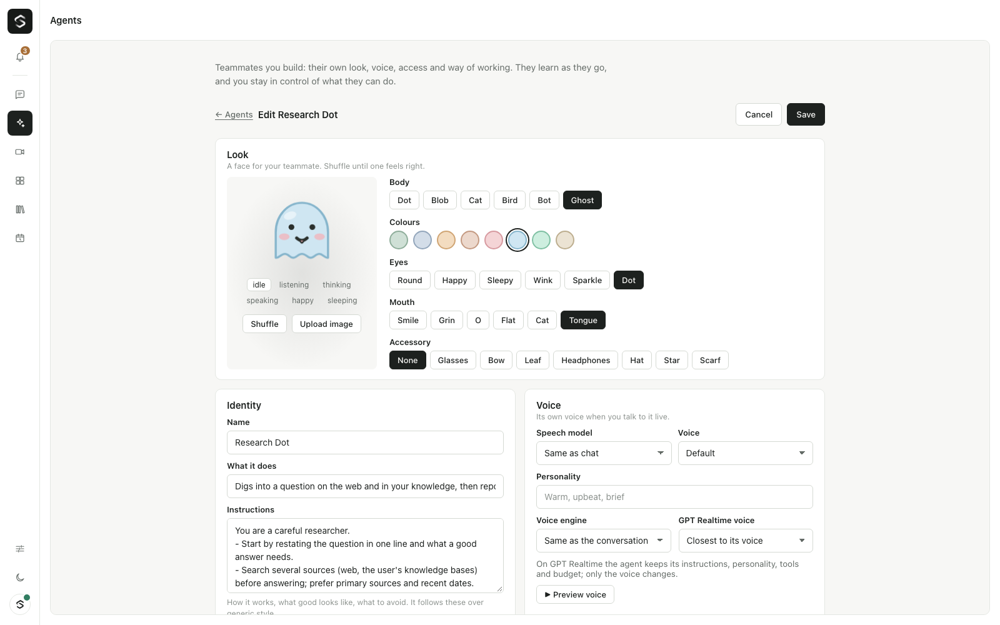

Agents
Agents are teammates people build themselves: a name, a generated avatar, a voice, instructions, and settings for access, autonomy, learning and budget. They run on Sibyl's own brain, with the same tools, skills, knowledge, approvals and budgets as everything else — there is no second agent runtime. An agent only shapes one brain call; the gateway enforces the rest.

Using an agent
- Composer: the "Ask Sibyl ▾" chip picks who answers (
agent.select, which also applies to live voice turns). The choice sticks for the connection. - Mention: start a message with
@Sales Buddy …(also@SalesBuddy,@sales-buddy). The mention is removed before the model sees the text. - Per message:
user.textandvad.speech_starttake an optionalagentId. - Routines: a routine with
agentIdruns as that agent (its prompt, access, autonomy and budget). An agent creating a routine makes it run as itself. - A turn answered by an agent is announced with
agent.turn {requestId, agentId, name, avatar}so the chat can show the agent's face next to the reply.
What changes during an agent's turn:
| System prompt | ## You are <name>, its instructions, curated memory (≤ 2,000 chars), its skills (name + description), its knowledge bases, how it may act |
| Tools | filtered by access (below), plus agent_recall (search its memory and past runs), agent_skill (load one of its skills), agent_knowledge_search (only its bases), agent_remember (unless learning is off) |
| Model | modelPreset: a catalog preset id (its llmModel) or a model id; otherwise the chat model |
| Voice | voice.ttsModel / voice.ttsVoice when the catalog offers them (also for spoken deep-work gists); voice.style goes into the voice prompt |
Access — never more than the creator
- Everything I can use (
inherit, default): every tool the creator may use in the workspace. It is checked withauthorize()on the creator's current principal at the start of each turn and again when each call runs, so an agent's access shrinks the moment its creator loses rights. A disabled or deleted creator leaves the agent with no tools. - Controlled: the intersection of the above with allowlists: tool names,
connectors (a tool's
provider, all its actions), knowledge bases, skills and secrets. A call that references${secret:NAME}outside the list is refused. - The person talking to a shared agent is checked too: a viewer can't run writes through an admin's agent.
- Tools receive
context.agent = { id, knowledgeBaseIds?, skillIds? }so knowledge and skill tools can stay inside a controlled agent's lists.

Autonomy
| Setting | Write actions |
|---|---|
ask_first (default) |
approval card for every write |
act_then_tell |
run without a card; an agent_action notification goes to the Inbox afterwards |
autonomous |
run within budget, no card |
High-risk actions always ask, whatever the setting: tools tagged
risk: "high" on their ToolDefinition (new, optional) and write tools whose
names contain delete / remove / pay / transfer / refund / purchase / share /
publish / invite / grant (see HIGH_RISK_NAME in apps/gateway/src/agents/access.ts).
Budgets
budget: { dailyUsd?, monthlyUsd? } per agent, on top of the organization's
caps. Every model call of an agent's run is bound to it (meter.bindAgent),
so tool loops, plain replies, speech and reflection all count. Before each
turn (and each routine round) the meter checks the agent's caps; at the cap
the agent pauses with budget.blocked (scope daily/monthly in the
browser) until the next day or month. Spend is kept in kv and restored on start.
Its own computer
computer: { enabled, idleMinutes?, dailyMinutes? } gives the agent a
sandboxed browser with a file area. The computer_* tools are offered only
to agents with it on (isAvailable sees the agent through usableTools),
and they follow the agent's access and autonomy like any other tool. See
Agent computers.
Learning
Inspired by Hermes Agent (Nous Research, MIT): skills written from experience as Markdown, curated memory, and search over past sessions.
- After every run the agent writes a short run log (task, steps, answer)
into its memory;
agent_recallsearches it (FTS5 in SQLite). - After a run with ≥ 3 tool steps, or when the user says something like "that's how we do it", one cheap reflection call (the Cheapest preset's model, metered against the agent) decides whether to propose a new skill, an edit to one, and/or memory lines.
learning: "ask_first"(default) stores them asSkillProposals for review (Agents → Review learning: approve as is, edit then approve, or reject)."automatic"applies them straight away — except edits to skills people wrote, which still wait."off"skips learning.- Applied skills are
SkillRecords withsource: "agent",agentIdand a version; edits keep the previous version on the proposal. Every applied change can be rolled back (new skill removed, edit restored, memory removed).
Permissions
| Permission | Who (built-in roles) | Allows |
|---|---|---|
agents.use |
Viewer and up | see and use agents visible to you |
agents.create |
Member and up | create private agents; edit and delete your own |
agents.share |
Admin, Owner | share agents with the workspace; edit or delete anyone's |
Private agents are visible only to their creator.
WebSocket protocol (/* ── Agents (v0.4) ── */)
Client → gateway: agents.request, agent.get {agentId}, agent.save {agent},
agent.delete {agentId}, agent.select {agentId|null},
agent.proposals.request {agentId?}, agent.proposal.decide {proposalId, decision: approve|reject|rollback, skill?, memory?}, agent.memory.request {agentId}, agent.memory.save {agentId, itemId?, text}, agent.memory.delete {agentId, itemId}, agent.voice.preview {requestId, ttsModel?, ttsVoice?, name?}.
Gateway → client: agents.list {items, templates, selectedAgentId?, canCreate, canShare}, agent.detail {agent, memory, proposals}, agent.saved {agent},
agent.proposals {agentId?, items}, agent.memory {agentId, items},
agent.turn {requestId, agentId, name, avatar}, agent.voice.sample {requestId, mimeType, audio}.
Avatars
packages/core/src/avatar.ts (also @open-gpt-live/core/avatar for the web):
deterministic SVG characters (dot, blob, cat, bird, bot, ghost, or an uploaded
image) from Sibyl palettes, with eyes, mouth and an accessory.
renderAvatarSvg(spec, { mood, size, title }) animates six moods (idle,
listening, thinking, speaking, happy, sleeping); randomAvatar(seed) and
normalizeAvatar(input) keep everything valid. No image model, no cost.
Storage
Collections agents, agentMemory (with keyword search) and skillProposals
in both stores; SQLite migration "agents" adds agents, agent_memory,
agent_memory_fts and skill_proposals.
Web
apps/web/features/agents: useAgents(client), AgentsScreen, AgentEditor
(avatar studio, voice with preview, access pickers, autonomy, learning,
budget, visibility, memory), AgentProposals, AgentAvatar, AgentPicker.
See the header of features/agents/index.ts for how to mount them.
Agents also work in Slack and Teams channels: see Agents in Slack and Microsoft Teams.
Not yet
The brain handing a sub-task to an agent ("ask Sales Buddy to draft …").
Agent computers (sandboxed browser) (wave C).
Slack/Teams presence (wave C).
Enterprise approval policies and audit of agent actions.